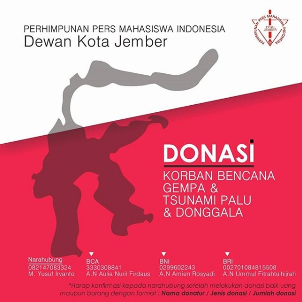
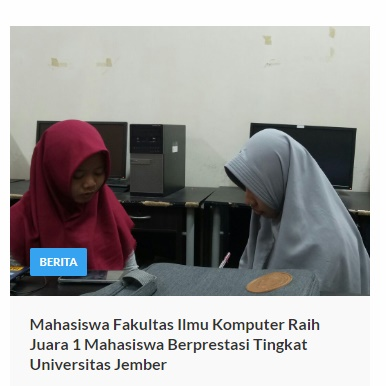
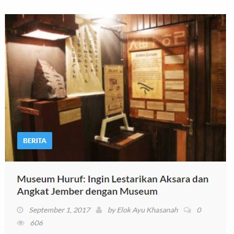

Beranda > Binary
UKM - Pers BINARY
VISI
"Mewujudkan budaya demokratis mahasiswa di lingkungan sosial dan kampus"
MISI
- Menumbuhkan budaya kritis dan berwacana.
- Mengembangkan minat mahasiswa Program Studi Sistem Informasi untuk berkarya dalam bidang jurnalistik dan desain grafis.
- Menciptakan jurnalis-jurnalis yang berkompeten dan independen.
TERKINI
Tim ODS Mahasiswa Fasilkom Berhasil Lolos Babak Final Gemastik 11, Nopember 1, 2018
Salah satu tim mahasiswa Fakultas Ilmu Komputer (Fasilkom) Universitas Jember (UJ) lolos babak final mewakili Universitas Jember dalam ajang Gemastik 11 yang akan dilaksanakan pada tanggal 3 November 2018, bertempat di Institut Teknologi Sepuluh November (ITS). Gemastik atau Pagelaran Mahasiswa Nasional bidang Teknologi Informasi dan Komunikasi Tahun 2018 merupakan program yang diselenggarakan oleh Direktorat Penelitian dan Pengabdian kepada Masyarakat (DP2M) DIKTI, sebagai upaya untuk meningkatkan kualitas peserta didik, sehingga peserta mampu mengambil peran sebagai agen perubahan dalam memajukan TIK dan pemanfaatannya di Indonesia.
Tim One Defensive Step (ODS) yang diketuai oleh Ludfi Ika Pratiwi memiliki arti “Setiap langkah terberat yang mereka lalui mencoba untuk tetap bertahan”. Awal mula tim mereka terbentuk bernama Tim Zetho yang hanya beranggotakan 3 orang yaitu Ludfi Ika Purwantini, Vian Elfada, dan Umroh Makhmudah karena ingin ikut serta pada lomba ISIC 2018 yang diadakan oleh HIMASIF Universitas Jember. Lomba ISIC sendiri pertama kali diadakan oleh HIMASIF pada tahun 2017 yang bertujuan untuk berkompetisi ide kreatif mahasiswa antar Fakultas dan diharapkan dapat ikut serta pada Gemastik. Tim Zetho mengumpulkan karya mereka dengan judul “BUANG.IN” yang dicetus pertama kali oleh Ludfi lalu dikembangkan oleh Vian dan Umroh. Tim Zetho berencana ingin melanjutkan karya mereka untuk diteruskan pada Gemastik dan berganti nama tim menjadi ODS yang beranggotakan 5 orang.
About Us
UKM-P BINARY adalah pers mahasiswa (persma) yang berperan dalam menjalankan fungsinya sebagai penyalur informasi, gagasan, pemantau kebijakan, dan peka terhadap peristiwa sekitar.
Lihat lebih lengkap disini -->
Post Populer Lainnya



Follow Us
 |
 |
 |